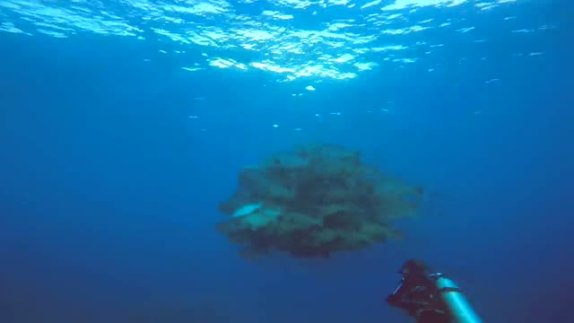
Great Barrier Reef — 48-second cut
Three dives cut together, colour corrected. — 0:48
Starting with forty-eight seconds on the Great Barrier Reef. Thousands more clips are being catalogued.
These clips play on this site. Archive.org preserves the source files and provides downloads for reuse.
Use these anywhere, including commercially. Credit Ank Kumar, and release anything you build from them under the same licence.
You do not need to ask me first, and you do not need to tell me. That is the whole point of the licence.

Three dives cut together, colour corrected. — 0:48
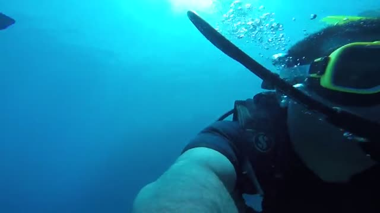
Dropping in on the outer reef off Cairns. — 0:08

Swimming the coral off Cairns. — 0:38
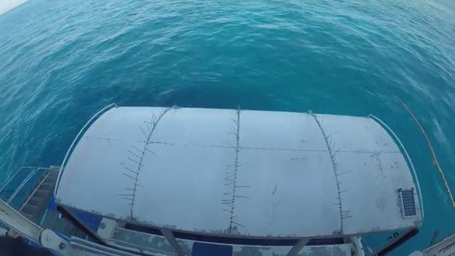
Breaking Patches, Hastings, Flynn, Norman, Saxon and Jorgensen Patch reefs. — 3:43

Macau Tower, 233 metres — the world’s highest commercial bungy. — 3:29
Birmingham, United Kingdom. — 2:03
J-5016 at Zurich Airport. — 0:23
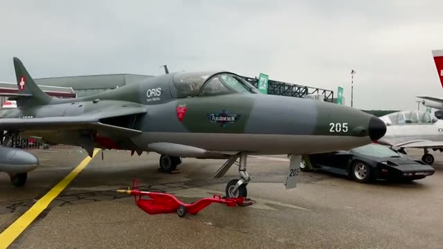
Hawker Hunter at Zurich Airport. — 0:20

The 37-metre steel and timber icon of Expo 2015, during its evening water and light show. — 0:49
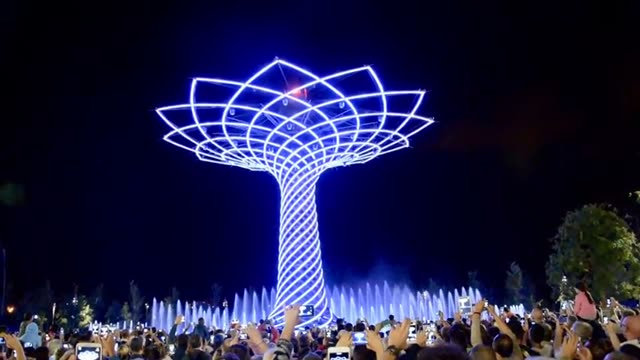
The canopy in full illumination above the fountains. — 0:14
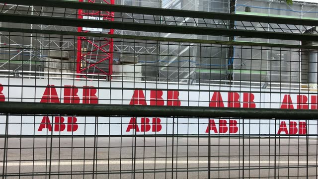
Zurich Street Circuit, 10 June 2018. — 0:02
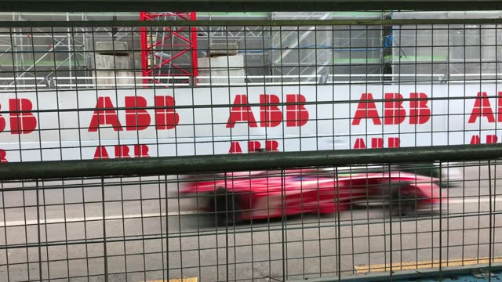
Zurich Street Circuit, 10 June 2018. — 0:24

Zurich Street Circuit, 10 June 2018. — 0:15
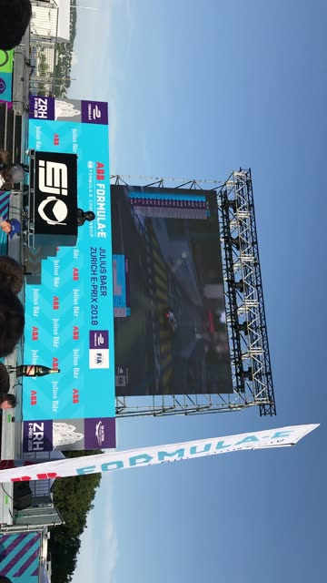
Zurich Street Circuit, 10 June 2018. — 0:21
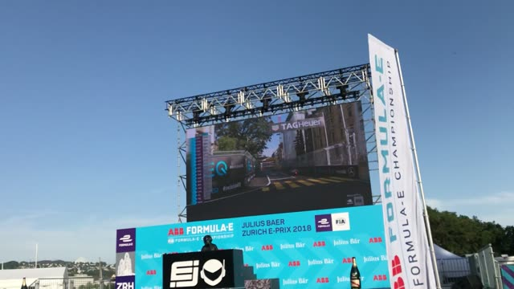
Zurich Street Circuit, 10 June 2018. — 0:02

London Film Museum - London, The UK (2012) The London Film Museum originally opened as The Movieum of London at County H. — 1:41
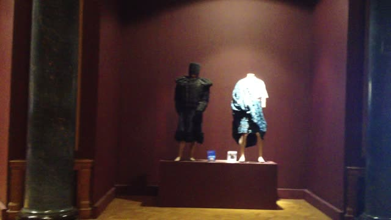
The London Film Museum originally opened as The Movieum of London at County Hall on the South Bank in February 2008 befo. — 0:38
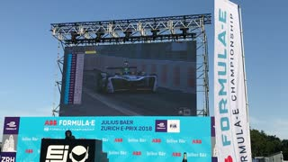
Zurich Street Circuit, 10 June 2018. — 0:03
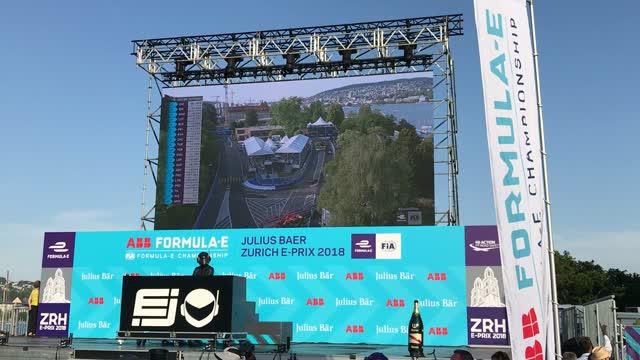
Zurich Street Circuit, 10 June 2018. — 1:36
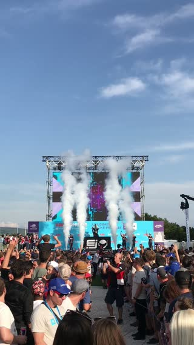
Zurich Street Circuit, 10 June 2018. — 0:36
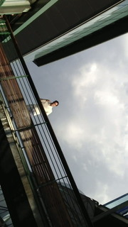
Federer after his 2012 Wimbledon men's singles final win over Andy Murray, on Centre Court. — 0:13
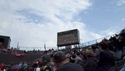
Federer defeated Andy Murray 4–6, 7–5, 6–3, 6–4 on Centre Court. Federer's 7th Wimbledon title. — 0:40
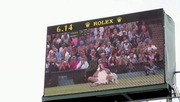
Federer defeated Andy Murray 4–6, 7–5, 6–3, 6–4 on Centre Court to win his 7th Wimbledon title. — 0:45

Federer defeated Andy Murray 4–6, 7–5, 6–3, 6–4 on Centre Court to win his seventh Wimbledon title. — 0:13
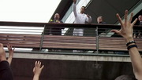
Djokovic beat Rafael Nadal 6–4, 6–1, 1–6, 6–3 on Centre Court. Djokovic's 4th Grand Slam title. — 0:32
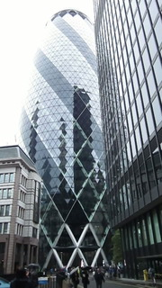
Footage from the Gherkin's public opening during Open House London on September 22-23, 2012. — 0:03
I have thousands of clips going back years, most of them never published. They are being catalogued by trip, place and date, and will appear here as they are processed.
The source files are preserved on the Internet Archive and, where the footage is useful to an encyclopaedia, on Wikimedia Commons. This site remains the viewing gateway.